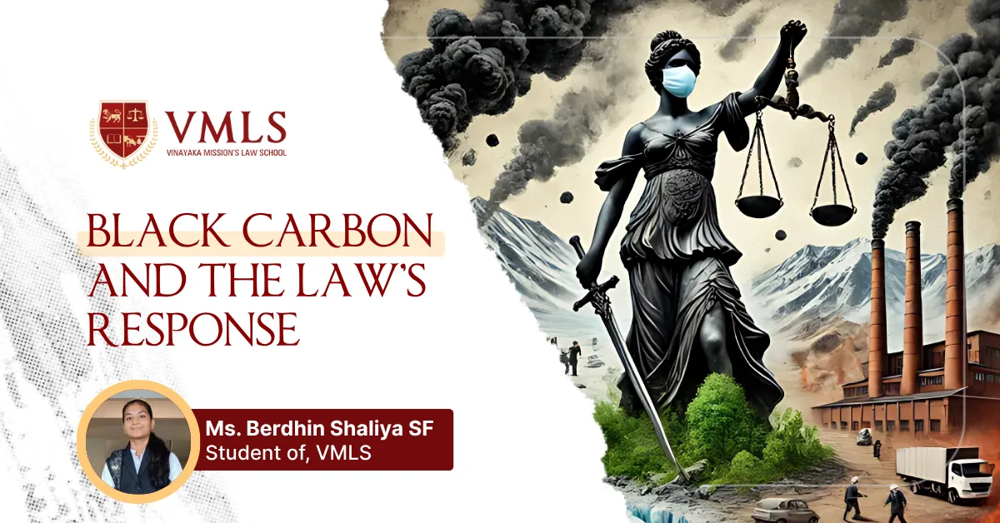

June 20, 2025
0 Views

Climate change stands as the central global problem of our time since it directly affects economic systems together with community structures and natural ecosystems. Extreme weather patterns together with rising sea levels and additional global warming effects became so severe that they require targeted public policies for their resolution. Poverty rates can reach as high as 27%. The environment gets sixty percent at best and agriculture four percent in Latin American countries. Legislation plays an essential role in sustaining development because it allows states and businesses to receive legal accountability to manage controls for ecosystems as well as constrain carbon emissions and follow sustainable development objectives.
Climate change shares comparable conditions with biochemical processes that happen when chemicals react improperly within human bodies. Waste products from body metabolism need strict management just like the dangerous emissions from fossil fuel burning affect atmospheric conditions. Food consumption by the body leads to carbon dioxide (CO2) emissions and other substances that the body releases for energy creation. The body possesses lung organs which serve as elimination points for CO2 just like forests absorb atmospheric CO2. When the Earth loses its ability to absorb CO2 through deforestation the atmosphere accumulates this compound resulting in air pollution.
The human body faces similar issues when it fails to properly eliminate pollutants. In the same way, sickness occurs because of an imbalance in the body's processes, such as an excess of toxic chemicals or an inability to get rid of waste. This is comparable to how global warming is caused by an imbalance in the Earth's atmosphere brought on by industrial activity and deforestation. Balance is necessary for the world and the body to function correctly, and when it is upset whether by biochemical processes or human activity bad things happen.
Climate change discussions mainly focus on carbon dioxide as their main topic but additional greenhouse gases together with aerosols known as super pollutants strongly affect both global warming and human well-being. The three pollutants methane along with hydrofluorocarbons and black carbon combine to create 45% of current warming while costing millions of deaths each year through air pollution reduction efforts show quick potential results in fighting climate change and could save 2.4 million lives from pollution deaths as well as reduce global warming levels four times more than following traditional carbon emission reduction plans through 2050.
The ratios between super pollutants and CO2 emissions remain low but their warming effect exceeds conventional temperature measurements by tonnage. Most atmospheric pollutants exist for only short durations ranging from several days to hundreds of years. They maintain considerable levels of sulphate.
Methane ranks as the second largest climate-changing compound after CO2 releases. During its initial two decades in the atmosphere methane produces eighty times as much warming effect as carbon dioxide. Continuous growth of methane emissions from agriculture and fossil fuels and waste has brought levels to 265% above pre-industrial periods expected for 2023. The temperature increases and modified rainfall patterns caused by methane emissions together with tropospheric ozone production result in crop loss that drives food scarcity.
Hospital records indicate tropospheric ozone induces severe medical issues because it triggers one million annually preventable respiratory conditions and cardiovascular death cases. Sunlight transforms hydrocarbons including nitrogen oxides and methane to produce this pollutant where methane emissions now represent one of its main production factors. Ozone produces damage to agricultural products beyond food security levels worldwide.
Black carbon results from unburned fuel which acts as a super pollutant by disrupting sunlight and rainfall and snow and ice melting while being 1,500 times more potent than CO2 as a warming agent. Research shows that exposure to black carbon leads to respiratory diseases and multiple cardiovascular issues and elevated blood pressure and it also reduces newborn baby birth weights.
The Global Methane Pledge has recently received political backing as an initiative to reduce methane emissions by 30% during the next decade. The simultaneous reduction of harmful chemicals creates dual advantages for slowing down climate change and improving public health thus serving as major steps for climate objectives and human well-being.
About half of climate change to date has been caused by the extremely toxic pollutant known as black carbon. One quick way to bring downward climate change and lessen the impact of severe storms could be to limit its emissions.
The supported document from Clean Air Fund and ICIMOD reveals that black carbon presents serious risks to water safety for many billions of individuals.
The combination of black carbon causes quick melting primarily among glaciers ice sheets and sea ice particularly in Arctic regions together with Hindu Kush Himalaya regions. Sea Ice melting occurs in South Asia from the effects of Black carbon pollution which increases monsoon alterations and leads to higher floods and harsh climate events damaging food supplies coupled with economic losses.
Kerosene lamps produce 10% of all black carbon emissions from residential spaces within India. Human production of black carbon through residential fuel burning and brick kilns generates 45% to 66% of total deposits observed in the Hindu Kush Himalaya region.
The sugar industry, rice mills, and brick kilns are additional the primary causes of black carbon emissions.
Black carbon stands as a primary component of fine particulate matter (PM 2.5) that produces severe health impacts. The number of premature deaths caused by black carbon reached eight million in 2021. Black carbon-caused environmental damage exceeds 6% of yearly global GDP which leads to major economic burden that primarily impacts vulnerable regions.
Rapid climate change in the Arctic occurring at four times the global rate stems from black carbon emissions. Climate tipping points are more likely to occur because of this development. In turn it would produce irreversible damage.
The full enactment of current black carbon emission policies in South Asian countries would lead to a 23% reduction in black carbon accumulation. The reduction of black carbon on glaciers results in a delay of melt rates by up to 50%.
The Hindu Kush Himalaya Karakoram region is currently experiencing glacier retreat. Scientific records show glaciers withdraw more than one meter in length every year within eastern regions. The maximum glacier reduction in the Mount Everest region will reach 52 percent by 2050 while present-day climate change halts could still result in destroying 20 percent of glaciers.
The early and severe heat wave struck nine states of India throughout February 25 through March 23, 2025. Among the affected states Maharashtra witnessed the most heat wave days while Gujarat and Odisha followed as secondary heat wave regions. The summer season began through the heat wave outbreak that started in the Konkan region. February 2025 marked a historical record by becoming the hottest month on record when various locations recorded temperatures exceeding 40°C. The new weather patterns included two states being above 40°C for one night and hot muggy weather spreading across Konkan, Goa, and Gujarat. Warm winds originating from the Indian Ocean made the heat conditions more intense. Scientists urge more research to assist citizens through adapting to expected summer increases caused by climate change. The upcoming summer season during 2025 seems expected to experience additional warmth.
The Supreme Court of India established climate change impact protection as a special legal right after the M.K. Ranjitsinh vs. Union of India court case which considered both Great Indian Bustard (GIB) conservation and infrastructure development needs. The petition called for quick protective actions for the GIB together with total protection strategies along with environmentally responsible management of its native grasslands. The court noted in an earlier decision that organizations need to evaluate each situation regarding ecological impacts alongside practical considerations while also requiring underground burying of low-voltage electricity wirings in GIB wildlife habitats to protect them. The Electricity Act of 2003 makes transmission infrastructure development complex thus protected areas require environmental regulations compliance and infrastructure should be avoided. The government illustrates its dedication to environmental protection and infrastructure growth through establishment of an expert panel for evaluating the comparison between underground and overhead power lines. Fundamental rights receive protection through constitutional provisions making the judiciary responsible for environmental rights defence even though India lacks specific climate change legislation. The decision reflects India's involvement and compliance to international climate conventions like the Kyoto Protocol and Paris Agreement. Through this judgment future environmental laws will follow because it confirms fundamental rights, and environmental rights have a constitutional connection under Articles 21 and 14 thus leading to comprehensive justice which maintains balance between ecology and economic progress. The historical effects of this case highlight why both climate change management and sustainable development need immediate international action from India. This judgement provides the legal precedent for the future issues concerning environmental protections which will structures both legal and individual rights both retrospectively and prospectively.
The foundation of Indian climate legislation would adopt a "development-first climate action" model to harmonize national economic advancement and poverty elimination targets with environmental regulations. Just transition provisions should take priority due to their established framework which enables financial assistance and training for carbon-intensive workers to transition to other jobs. The government would back multi-purpose efforts which create joint advantages for energy security coupled with public health and air quality aims under this bill. This legislation focuses on "sector-specific strategies" that resolve citizens' field-based issues such as energy distribution and transportation while "clean technology" incentives facilitate technological advancement. A "strong Monitoring Reporting and Verification (MRV) system" operates to help organizations achieve accuracy and operational supervision through continuous assessments regarding updated climate science knowledge and international conference like the Paris Agreement.
To establish effective climate governance India should create a "Climate Cabinet" which combines essential ministers with state Chief Ministers and could be led by the Prime Minister. The body would determine the overall climate strategy while maintaining policy consistency throughout different governmental departments and all levels of administration.
Senior officials should have increased freedom to work together across ministries to support the "strengthened Executive Committee on Climate Change" which would lead policy implementation. The Executive Committee must integrate with core ministries through Climate Change Cells to integrate environmental initiatives into sector-based plans.
State Climate Change Authorities will work with their assigned responsibilities to develop state-level climate action plans that would contribute to the national effort. The State Climate Change Authorities managed funds received from private facilities through a leadership role of the "Climate Finance Authority." This body would receive both nation-based and international financing.
A "Independent Climate Change Commission" should operate as an oversight body which generates yearly reports for Parliamentary review to secure transparency and accountability. The "Climate Justice Ombudsman" serves as a public watchdog to address climate complaints from the people through the implementation of justice systems for climate protection.
India's climate law requires a few legal mechanisms to be implemented and enforced. "Statutory duties" should clearly require government agencies to develop and carry out plans for climate action, make sure that climate issues are considered when making decisions, and provide regular updates on their progress.
Significant legislative choices and tasks must be subject to "climate impact assessments." The ability to regulate climate responsibilities through "public interest litigation," such as class action lawsuits, should be granted to citizens. Regular audits, required reporting, and sanctions for infractions are all examples of "compliance mechanisms."
The laws related to climate in India necessitate the creation and implementation of various legal structures. The legal requirement of "statutory duties" must enforce government agencies to build climate action plans alongside treatment of climate concerns in decision-making processes and periodic performance updates.
The process of legislation requires "climate impact assessments" for all meaningful decisions. Real power for climate responsibility regulation should be provided to citizens through the public interest litigation system including class action lawsuits. Certifying regular audits together with necessary reporting requirements and implemented actions for non-compliance statuses comprise "compliance mechanisms."
The solution to climate change's various problems demands complete and enforceable legal institutions to address them effectively. The development of laws provides vital support for creating progress with sustainability goals by establishing guiding principles and accountability measures toward actions. A combination of strict environmental regulations for governments and corporations unlocks the path to reduce global warming effects and allows for balanced coexistence of economies and communities with natural ecosystems. Detailed efforts regarding climate legislation during today will produce lasting benefits for a strong and environmentally friendly future.
Down to Earth. (2025). India records earliest heatwave and warm nights in 2025.
Down to Earth. (2025). Cutting soot pollution could slash emissions by 80% by 2030: ICIMOD.
Down to Earth. (2025). Heat and humidity have started early and intense, courtesy global warming.

5-Year Law Programme at VMLS
Jan 08, 2025Several students across India are choosing law as a career due to the various benefits it offers.

3-Year LLB Programme at VMLS
Jan 07, 2025The 3-year LLB (Bachelor of Legislative Law) programme is an undergraduate programme designed to cater...

VMRF Law Aptitude Test (VLAT): A Complete Guide
Dec 30, 2024Vinayak Mission's Law School (VMLS) is one of the best law schools in India and is being mentored by O. P. Jindal Global...

Top Law Colleges in India
Dec 23, 2024In India, law is seen as a noble career option, and the number of students interested in pursuing law is increasing.

Subjects in Law Courses
Dec 18, 2024If you are willing to work in a legal advisory firm, judiciary, or as a lawyer, then pursuing a law degree plays...

CLAT Exam Importance, Eligibility, Criteria and Syllabus
Dec 17, 2024CLAT is a national-level entrance exam, and it stands for Common Law Entrance Test. Many top law universities in India.